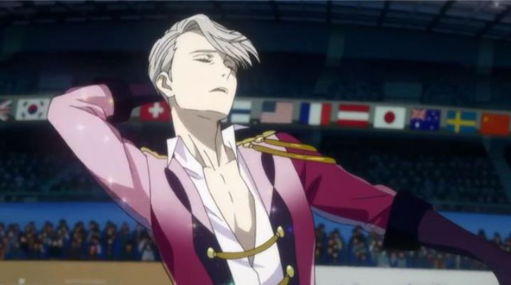

There aren't many Japanese anime that can break barriers to capture an audience outside dedicated otaku culture, even if being a geek of any kind has become the norm in the 21st century. But in 2016, "Yuri on Ice!!!" was one such show, nearly hitting peaks as high as those hit by "Attack on Titan" and "Fullmetal Alchemist." Specifically, it seemed to have a spark in the athletic community, airing around the time when the 2016 Summer Olympics in Rio were in full swing. Funimation's American Bluray release would even quote Johnny Weir (a professional skater) over any anime news outlet for accolades on the box. Aside from the wide reach among the often overlooked skating fandom, it also found an audience in the LGBTQ community.You see, the title "Yuri on Ice!!!" is a pun that most anime fans caught right away, it even being the butt of jokes before the show's broadcast. "Yuri" is the name of the lead character, a Japanese figure skater who becomes inspired to go for gold after a humiliating defeat the prior year (technically, a second lead character, a rival from Russia, is also named "Yuri"). But in anime, "yuri" is also a genre, typically used to describe a show featuring a romantic relationship between two female characters. Even though "Yuri on Ice!!!" would feature a mostly male cast, that the show would be a sports anime centered around figure skating suggested that the men could very well be gay. Afterall, skating is hardly a sport, it is more an art that features men and women in feminine and glittery one-piece suits dancing to music on the ice. The show's creators likely intended the connection, as the entire show heavily flirts with its characters being gay for the sake of comedy or romance. Viewers probably thought they wouldn't take the idea seriously, until halfway through the series when Yuri's skating coach, Victor, kisses him publically in embrace after a knockout skating performance, and when in a later episode, Yuri and Victor present rings to each other as "good luck charms" for the final set. Despite all of this, the English script never actually uses the terms "gay" or "straight" in the dialogue. It is presumed that Victor is gay (or possibly bisexual), and that Yuri is straight, and that fellow competitors are a mixture of each. But it is never outright confirmed for most of the characters, because it simply doesn't matter. This is the biggest strength of "Yuri on Ice!!!": while it is brimming with sexual tension and doesn't hesitate to use that tension or gay stereotypes for occasional comedic effect, it treats sexual preference with the respect it deserves, as something perfectly natural and unnecessary to justify. The show's director Sayo Yamamoto has a history in anime of similar themes (sexuality, confidence, and/or independence), and her take on these themes here further cement her as an idol for a community long looking for entertainment media they can be proud of.Aside from being gay as can be, "Yuri on Ice!!!" is naturally a sports show, and also an effective comedy and drama. In the first episode, Yuri comes home after a humiliating defeat at an international skating competition, his failure caused by a mixture of anxiety and stress. After being welcomed home by his town and family (trying to avoid the posters of him throughout, as he is the biggest celebrity the small hot spring town had ever had), he is able to enjoy skating again, but with his old crush having gotten married with children in the years since he left, and after his crushing defeat, he doesn't know what to do next. That's when Victor, a top-skater from Russia and Yuri's idol, surprised him in Japan, saying he was inspired by his skill and agreeing to be his coach for the new season (Victor proclaims this stark naked in the hot spring owned by Yuri's family). Over the following months, Yuri trains with Victor, Victor deals with the backlash of him taking time off from his skating career in Russia, and the fruits of their labor are seen in international competitions that culminate back in Russia. The comedy lands well, thanks to large reactions and exagerated character animations, and similarly, the drama behind having to perform in front of millions of viewers is heart-wrenchingly believable. Truely, the show wouldn't be as much fun to watch if it weren't for Yuri's earnest supporters cheering him on. The show is also impressively international, first taking place in Detroit, USA, then moving to several parts of the world as Yuri competes against a variety of international skaters, including a antagonist in the confident JJ from Canada (in real life, Canadians are not the confident rock stars JJ is made out to be, but if there were anything they would be confident in, it would be hockey, curling, and figure skating). But is the competition exciting? "Yuri on Ice!!!" does well to explain the rules behind skating and how points are given out (for artistic merit, technical skill, minus messups, but a strong choreography could still allow a couple misteps to win first place), but the core of it is still in watching skaters perform one by one. Further, they perform the same routine they practiced, one that the judges themselves are made known as well as the performer knows it. And if this show is correct, the same routine to the same music is performed at most of the year's events, with minor differences in jumps to get a higher score later in the season. This does get repetitive when roughly half of the animated content is of choreographed skating, and when much of that skating is repeated multiple times through the series. The animaton looks stronger in side-characters in their expressiveness, at least early in the series; in a handful of scenes, the rotoscope-style of skating choreography looks fantastic when it merges with the background and has weight. But for most of the skating, the background is clearly painted and moved separate from the initial choreography animation, making the dance feel floaty. Again, the skating animation will be repeated two or three times over for each of the characters with little variation. It's a minor shame, since the visual design is otherwise solid, taking advantage of the crafted beauty the sport demands. In short, "Yuri on Ice!!!" will make you appreciate figure skating a lot more than you did before, but if you weren't a die-hard fan from the start, you won't turn much over for the sport even after the show is finished. The animation is good, but still feels constrained by a budget more than some of Studio MAPPA's other works. But the show also makes you appreciate other things, be it romance or the drive to reach the top. The opening theme "History Maker" (sung in English by a Japanese singer) became an anthem for both professional skaters and the gay community around the world, and its hard not to have a smile on your face and hope for what lies ahead after watching Yuri's journey.
- "Ani" More reviews can be found at : https://2danicritic.github.io/ Previous review: review_Yu-Gi-Oh_-_The_Movie,_Bonds_Beyond_Time Next review: review_Zarafa